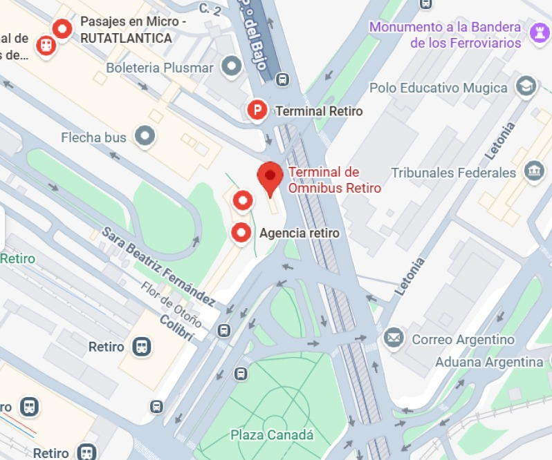

¿Cómo puedo comprar un pasaje?
Podés comprar tu pasaje en línea a través de nuestro sitio web o en la boletería de la terminal.
¡Viajá hoy, reservá en minutos! Tu próxima salida te está esperando.
¡Olvidate de las filas! Con nuestra plataforma de compra online, podés reservar tu pasaje en minutos desde la comodidad de tu hogar o mientras estás en movimiento. Simplemente seleccioná tu destino, elegí tu asiento y pagá de forma segura.
Punto de partida de miles de viajes cada día. La Terminal de Retiro conecta Buenos Aires con el resto del país, ofreciendo servicios modernos para que tu experiencia sea cómoda desde el primer momento.
Dirección: Av. Dr. José María Ramos Mejía, Ciudad Autónoma de Buenos Aires.
Horario: Lunes a Domingo las 24 horas. Boleteria: Lunes a Domingo de 06:00 a 22:00.

Si tu próximo viaje en micro parte o arriba a Retiro, encontrarás las siguientes alternativas en medios de transporte para acercarte a la terminal:
5, 6, 9, 20, 21, 22, 23, 26, 28, 33, 45, 50, 56, 61, 62, 70, 75, 91, 92, 93, 100, 101, 106, 108, 115, 126, 129, 130, 132, 143, 150, 152, 194 y 195.
Belgrano Norte, Mitre, Roca, Sarmiento y San Martín.
C.
Podés comprar tu pasaje en línea a través de nuestro sitio web o en la boletería de la terminal.
Sí, podés cancelar y modificar tu pasaje hasta 24 horas antes de la salida programada. Gestiona todo desde la sección pasajes o contactá a nuestro equipo de atención al cliente para más detalles.
Nuestros micros están equipados con asientos reclinables, aire acondicionado, Wi-Fi gratuito y entretenimiento a bordo para garantizar tu comodidad durante el viaje.
Si tenés alguna pregunta sobre tu viaje, nuestros servicios o cualquier otra consulta, no dudes en contactarnos. Nuestro equipo de atención al cliente está disponible para ayudarte en cada paso del camino.